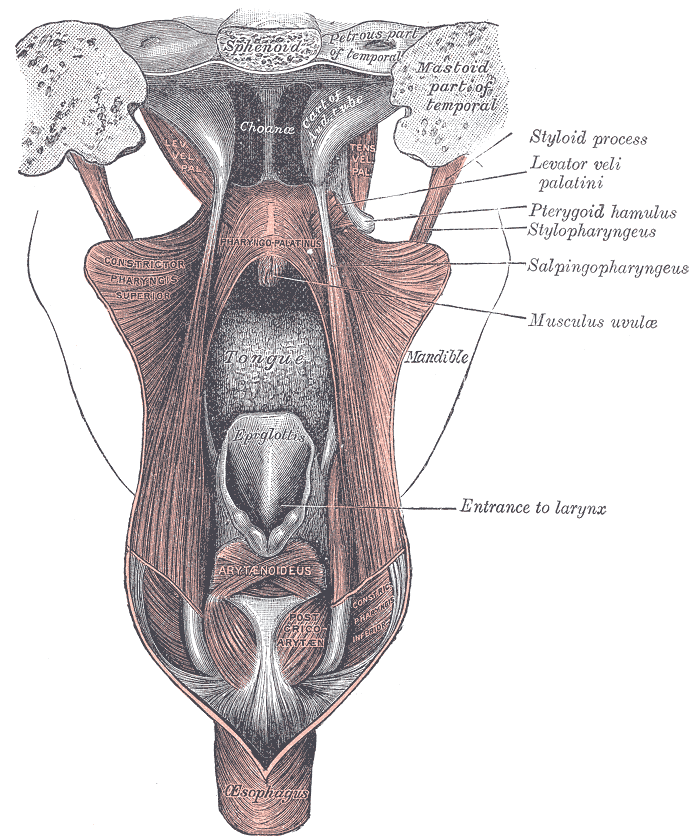

Erro comum desmontado
Desce (não sobe) e o relógio do repouso
Pior de manhã e melhor à noite — isso mata miastenia? Só se o ritmo fosse o do sol. O ritmo é o do repouso: plantão noturno inverte a curva.
Desce: olho → bulbar → proximal
A MG pode generalizar: sai do olho e desce. Sequência típica: olho → musculatura bulbar → proximal de membros.
Musculatura bulbar: garganta — fonação, deglutição, articulação das palavras, língua.
Saiu do olho = generalizada
Por definição operacional: saiu do olho = forma generalizada.
Bordão: MG desce; GBS sobe.

Henry Vandyke Carter, in Gray, Anatomy of the Human Body (1918), via Wikimedia Commons. Public domain. Source: commons:Gray1028.png

Desce · generalizada
A musculatura bulbar (fonação / deglutição) é o próximo território depois do olho na generalização da MG. Engasgos, voz anasalada, fala enrolada — território craniocervical saindo do olho para descer ao proximal de membros.
GBS sobe
Contraste com Guillain-Barré: GBS sobe; MG generalizada desce. Direção oposta — é o atalho de prova.
Relógio do repouso + plantão
Ritmo clássico: melhora pela manhã (repouso noturno) e piora ao longo do dia ("na hora do almoço já está um caco").
Na prática, muitas pacientes não dizem "fraca": dizem "cansada" / "termino o dia cansada" — cansaço pode ser fraqueza.
Relógio do repouso — dois cenários
Diurno
Acorda com força → cai ao longo do dia → recupera no sono.
☀ Manhã = ↑ ↑ · Tarde = ↓ · Noite = ↓↓
Plantão noturno
Trabalha de noite e dorme de dia. O ritmo segue o repouso: "pior de manhã, melhor à noite" pode ser MG.
🌙 Manhã = ↓↓ · Tarde = ↑ · Noite = ↑↑ (no trabalho)
Seta descendente olho → bulbar → proximal + chip "GBS sobe".
Quiz
Q1. A generalização típica da MG:
Gabarito: B. Direção descendente: olho → bulbar → proximal. É o contraste de prova com GBS (que sobe).
Q2. Saiu do olho (bulbar ou membros), a forma é:
Gabarito: B. Definição operacional: saiu do olho = forma generalizada.
Q3. Paciente pior de manhã e melhor à noite, com trabalho noturno:
Gabarito: B. O ritmo da MG é o relógio do repouso, não do sol. Trabalho noturno + sono diurno inverte a curva.